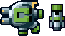

10 |
武器の種類 |
 |
●武器の種類 装備パーツを取るとPHALANXの武器が変化します。 状況に応じて使い分けていきましょう。
１.通常弾 通常のショット。威力は控えめだが連射性は高い。パワーアップで弾数が増える。
２.ホーミング弾 敵を追尾するショット。 威力は低いが、確実に当てることが出来る。パワーアップで弾数が増える。
３.圧搾弾 チャージ式のショット。連射性は低いが、単発の威力は大きい。 パワーアップで威力と弾数が変わる。
４.反射弾 反射する特殊なショット。 とてもトリッキーで、威力は普通。パワーアップで弾数と弾の大きさが変わる。
５.レーザー 貫通するショット。連射性は悪いが、貫通による多段ヒットがある。パワーアップで弾数と弾の大きさが変わる。
６.ミサイル ・タイプA 追尾式ミサイル。敵機を永遠と 追い回す。消費弾数は２発。 ・タイプB 貫通式ミサイル。着弾しても そのまま貫く。消費弾数は１発。 ・タイプC  対地対空式ミサイル。発射後上下に飛ぶ。消費弾数は２発。 |

 |
 |
 |